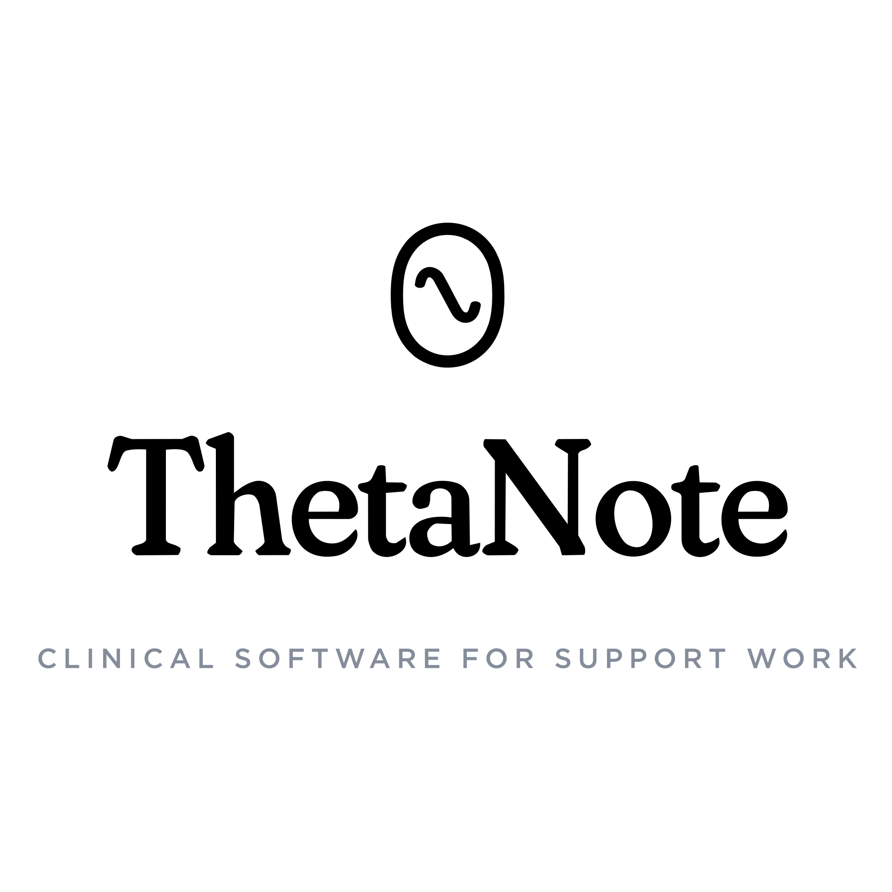

Exploration, not a lock. The theta + wave/capsule idea, kept simple, plus arrangement and wordmark options. Each shown as a lockup and at small size (the small chips test favicon/app-icon legibility). Current mark is the baseline below.
